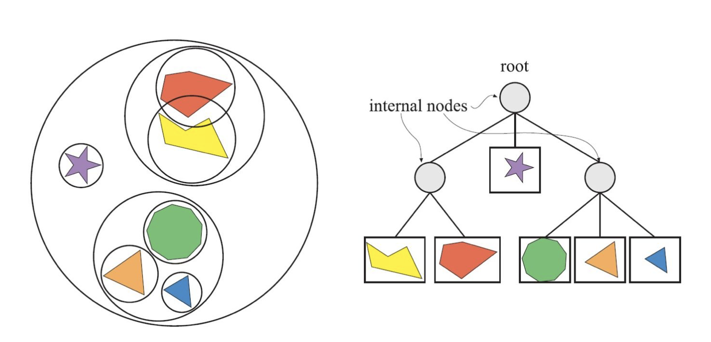

# 空间结构划分
# 层次包围盒 | Bounding Volume Hierarchies , BVH
层次包围盒（Bounding Volume Hierarchies, BVH）方法的核心思想是用体积略大而几何特征简单的包围盒来近似地描述复杂的几何对象，从而只需对包围盒重叠的对象进行进一步的相交测试。此外，通过构造树状层次结构，可以越来越逼近对象的几何模型，直到几乎完全获得对象的几何特征。
对于三维场景的实时渲染来说，层次包围体（Bounding Volume Hierarchy，BVH）是最常使用的一种空间数据结构。例如，层次包围体经常用于层次视锥裁减。场景以层次树结构进行组织，包含一个根节点（root）、一些内部节点（internal nodes），以及一些叶子节点（leaves）。顶部的节点是根，其无父节点。叶子节点（leaf node）包含需渲染的实际几何体，且其没有子节点。
相比之下，内部节点包含指向它子节点的指针。因此，只要根节点不是这颗树唯一的一个节点，那么它就是一个内部节点。树中的每一个节点，包括叶子节点，都有一个包围体可以将其子树中的所有几何体包围起来，这就是包围体层次的命名来源，同时，也说明了根节点有一个包含整个场景的包围体。

# BSP 树 | BSP Trees
BSP 树 (二叉空间分割树，全称 Binary Space Partitioning Tree) 是一种常用于判别对象可见性的空间数据结构。类似于画家算法，BSP 树可以方便地将表面由后往前地在屏幕上渲染出来，特别适用于场景中对象固定不变，仅视点移动的情况。
其中，BSP 是 Binary SpacePartitioning（二叉空间划分法）的缩写。这种方法递归地将空间使用超平面划分为凸面体集合。而这种子划分引出了借助于称之为 BSP 树的树形数据结构的场景表示。

BSP 树是一棵二叉树，每个节点表示一个有向超平面，其将当前空间划分为前向（front）和背向（back）两个子空间，分别对应当前节点的左子树和右子树。且 BSP 树已经在游戏工业上应用了许多年（Doom 是第一个使用 BSP 树的商业游戏）。尽管在现今 BSP 树已经没像过去那么受欢迎了，但使用依然广泛。
BSP 树的一个有趣特性是，如果用一种特定的方式遍历，树的几何内容可以从任何角度进行前后排序。这个排序可以近似轴对齐，精确对齐多边形 BSP。与 BVH 不同的是，BVH 通常不包含任何形式的排序。
# BSP 树的种类
在计算机图形学中，BSP 树有两大类别，分别是为轴对齐（Axis-Aligned）BSP 树和多边形对齐（Polygon-Aligned）BSP 树。下面分别进行介绍。
轴对齐 BSP 树 | Axis-aligned BSP tree
轴对齐BSP树可以按如下方式来创建。首先，将整个场景包围在一个AABB（轴对齐包围盒，Axis-Aligned Bounding Box）中，然后以递归的方式将这个包围盒分为若干个更小的盒子。现在，考虑一下任何递归层次的盒子。选取盒子的一个轴，生成一个与之垂直的平面，将盒子一分为二。有一些方法可以将这个分割平面固定，从而将这个盒子分为完全相同的两部分，而也有其他的一些方法，允许这个平面在位置上有一些变化。与分割平面相交的物体，要么存储在这个层次上，成为两个子集中的一员，要么被这个平面分割为两个不同的物体。经过这个过程，每个子集就处于一个比较小的盒子中，重复这个平面分割的过程，就可以对每个 AABB 进行递归细分，直到满足某个标准才终止这个分割过程。而这个标准，通常是用户定义的树最大深度，或者是盒子里面所包含的几何图元数量，需低于用户定义的某个值。
分割平面的轴线和位置对提高效率至关重要。一种分割包围盒的方法就是轴进行循环。即在根节点，沿着 x 轴对盒子进行分割，然后再沿着 y 轴对其子盒子进行分割，最后沿 z 轴对其孙盒子进行分割。这样，就完成了一个循环周期。使用这种分割策略的 BSP 树常被称为 k-d 树。而另一种常见策略是找到盒子的最长边，沿着这条边的方向对盒子进行分割。

允许空间分割位于轴上的任意位置，不一定必须在中点位置，形成的空间体分别用 A~E 来标志。右图所示的树是当前的 BSP 树数据结构，每个叶子节点表示一个区域，区域内容显示在下方。注意，黄色三角形在物体列表中含有 C 和 E 两个区域，因为它同时覆盖了这两个区域。

值得一提的是，从前到后的粗排序（Rough Front-to-Back Sorting）是轴对齐 BSP 树的一种应用示例，这种方法对于遮挡剔除算法非常有用。而在视点的另一侧进行遍历，可以得到从后向前的粗排序（Rough Fack-to-Gront Sorting）, 这对于透明排序非常有用。且还可以用来测试射线和场景几何体相交的问题，只需将视点位置换为射线原点即可，另外还可以用于视锥裁剪。
多边形对齐 BSP 树 | Polygon-aligned BSP tree
多边形对齐BSP树（Polygon-aligned BSP tree）是BSP树的另一大类型，其中将多边形作为分隔物，对空间进行平分。也就是说，在根节点处，选取一个多边形，用这个多边形所在平面将场景中剩余多边形分为两组。对于与分割平面相交的多边形来说，沿着其中的交线将这个多边形分为两部分。然后，在分割平面的每个半空间中，选取另外一个多边形作为分隔物，只对这个分隔物所在平面的多边形进行继续分割，直到所有的多边形都在BSP树中为止。需要注意，多边形对齐 BSP 树的创建是一个非常耗时的过程，这些树通常只需计算一次，可以存储起来进行重用。

左图中，多边形分别用 A~G 表示。首先，用多边形 A 对空间进行分割，生成的两个半空间分别由多边形 B 和 C 分割，由 B 形成的分割平面与左下角的多边形相交，将其分割为多边形 D 和 E。最后形成的 BSP 书如右图所示。
因为完全不平衡树的效率非常低，所以多边形对齐 BSP 树分割时最好是形成平衡树，即每个叶子节点的深度相同或者相差一个层次的树。
多边形对齐 BSP 树的一个典型性质就是对于一个给定的视点来说，可以对该结构按照从后往前（或者从前往后）的顺序进行严格遍历，而轴对齐的 BSP 通常只能给出粗略的排序顺序。所以，基于多边形对齐 BSP 树的此性质，建立了严格的前后顺序，可以配合画家算法来绘制整个场景，而无需 Z 缓冲。
多边形对齐 BSP 树的其他应用也包括相交测试和碰撞检测等。

# 八叉树 | Octrees
八叉树（octree），或称八元树，是一种用于描述三维空间的树状数据结构。八叉树的每个节点表示一个正方体的体积元素，每个节点有八个子节点，这八个子节点所表示的体积元素加在一起就等于父节点的体积。一般中心点作为节点的分叉中心。
简单来说，八叉树的空间划分方式很简单，即递归地进行规整地 1 分为 8 的操作。如下图，把一个立方体分割为八个同样大小的小立方体，然后递归地分割出更的小立方体。这个就是八叉树的命名来源。这种分割方式可以得到比较规则的结构，从而使得查询变得高效。

松散八叉树 Loose Octrees
松散八叉树的基本思想和普通八叉树一样，但是每个长方体的大小选中比较宽松。而如果一个普通长方体的边长为 l，那么可以用 kl 来代替，其中 k>1，如下图所示。

一个普通八叉树和松散八叉树的比较。图中黑色的原点表示长方形的中心点（第一次细分）。在左图中，星形物体刺穿了一个普通八叉树的一个分割平面。，这样，一种选择就是将这个星型物体放在最大的长方形中（根节点的长方体）。而右图所示为一个 k=1.5 的松散八叉树，也就是将长方体放大了 50%，如果将这些长方体稍微移动，就可以保证区分出它们。这样，这个星型多边形就完全位于左上角的长方形之中。